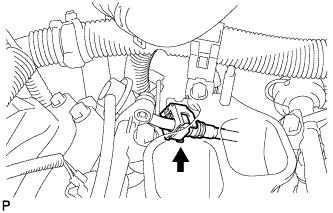
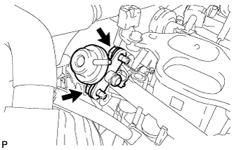

РЕГУЛЯТОР ДАВЛЕНИЯ В ТОПЛИВНОЙ СИСТЕМЕ > СНЯТИЕ |
| 1. СБРОСЬТЕ ДАВЛЕНИЕ В ТОПЛИВНОЙ СИСТЕМЕ |
Сбросьте давление в топливной системе (Нажмите здесь).
| 2. ОТСОЕДИНИТЕ ПРОВОД ОТ ОТРИЦАТЕЛЬНОГО ВЫВОДА АККУМУЛЯТОРНОЙ БАТАРЕИ |
| 3. СНИМИТЕ РАСШИРИТЕЛЬНЫЙ БАЧОК НА ВПУСКЕ ВОЗДУХА |
Снимите расширительный бачок на впуске воздуха (Нажмите здесь).
| 4. ОТСОЕДИНИТЕ ТОПЛИВОПРОВОД № 2 |
|  |
Отсоедините топливопровод № 2 (Нажмите здесь).
| 5. СНИМИТЕ РЕГУЛЯТОР ДАВЛЕНИЯ ТОПЛИВА В СБОРЕ |
Отсоедините вакуумный шланг.
|  |
Выверните 2 болта и снимите регулятор давления топлива.
Снимите кольцевое уплотнение с регулятора давления топлива.